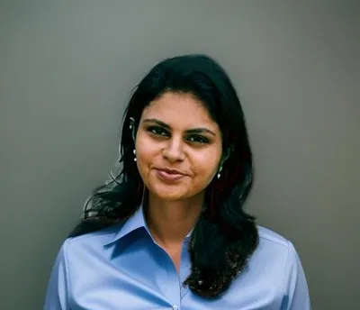

Data professional bridging analytics, engineering and machine learning — building real-time dashboards, automated data pipelines and predictive models that turn manufacturing data into decisions people trust.
Analyze manufacturing, quality and inspection data on Siemens Insights Hub to identify trends, deviations and process anomalies. Built real-time Grafana dashboards monitoring 250+ process and quality parameters.
Intensive, project-based program in Python, machine learning, data engineering and Google Cloud Platform.
Built web applications with ASP.NET (C#), SQL, JavaScript, HTML and CSS. Optimized SQL queries to cut data retrieval time by 30%, delivering 100% of projects on schedule.
Years spent explaining complex ideas clearly — a skill that now shows up in every dashboard designed for a non-technical shop-floor audience.
Engineering foundation underpinning the analytical and technical approach applied across every role since.
End-to-end ML web app predicting heart disease risk, with an integrated AI chatbot for personalized health guidance — deployed as a public Streamlit app.
Cloud ETL pipeline forecasting e-scooter demand across European cities, combining weather data with historical usage patterns.
Analysis of 100,000+ e-commerce records; Tableau dashboards revealed 20% delivery delays on technology products, informing market-entry strategy.
Analyzed 15 months of sales data to identify inefficient discount strategies, delivered as stakeholder-ready visualizations.
Production issue reporting app used by shop-floor staff to log and track problems in real time.
Automated planning and production reporting system with VBA-driven data validation, automatic KPI calculation, Power BI dashboard refresh and a daily email summary.
Power BI dashboard analyzing chocolate sales performance by product, country, sales representative and time period — KPI cards, monthly/quarterly trends, revenue by product, and salesperson ranking.
Power BI dashboard for process engineering analysis, monitoring key process parameters and performance metrics to support engineering decisions.
Recognized for a cross-site initiative moving process monitoring from reactive to predictive, using historical operating data to anticipate deviations before they occur.